What Was the Gladius, Really? Rome's Sword
GladiusRoman GladiusWhat Was the GladiusRoman SwordGladius HispaniensisSpanish Sword
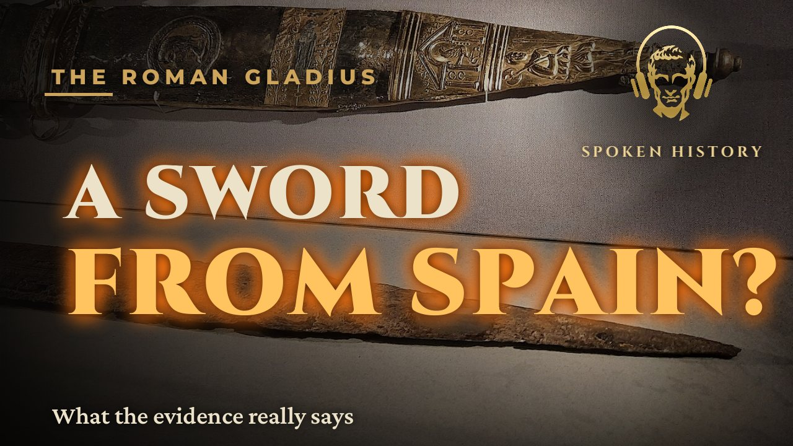
Macedonia, about 200 B.C. King Philip V has his dead cavalrymen carried back into camp. He wants every man to see how they are honoured in death, says the Roman historian Livy. It does the opposite. His soldiers know the wounds of javelins and arrows. Now they see arms cut off at the shoulder, and heads cut clean from the body. And a shudder of fear runs through the camp. Livy names the weapon. The Spanish sword.
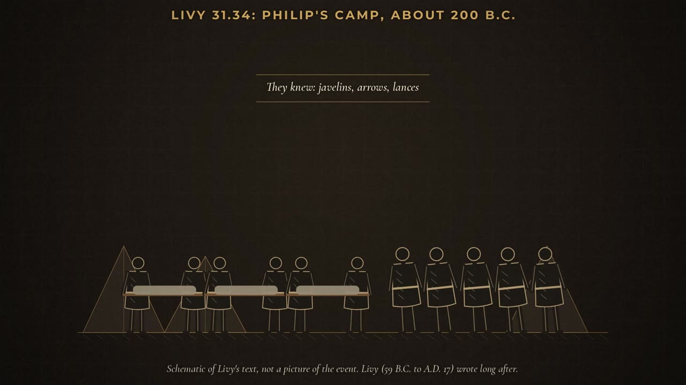
The gladius. The sword of the Roman legions. Last time I asked what we should take apart next. This is it. The Roman weapon everyone thinks they know. Today we're asking what it was, what has been dug up, and what the texts really say. Because even that story from Livy is not as simple as it sounds.
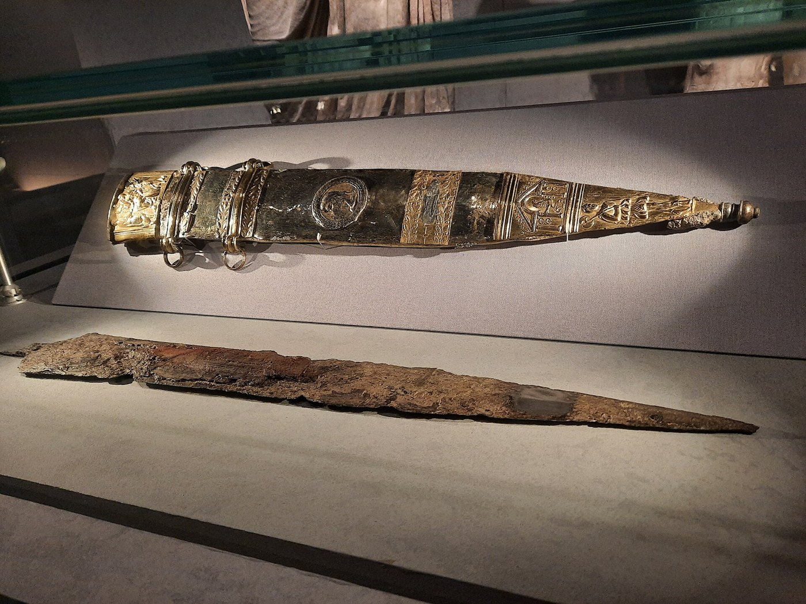
What does gladius mean?
First, the name. In Latin, gladius simply means a sword. Any sword. And a gladiator is, literally, a swordsman. What historians call the gladius is the sword of the Roman foot soldier. The best description comes from a Greek, Polybius, who lived in Rome from about 167 B.C. He says the heavy-armed Roman foot soldier carries a sword on the right thigh, and that it is called the Spanish sword. In Paton's translation: it is excellent for thrusting, and both its edges cut, because the blade is very strong and firm.
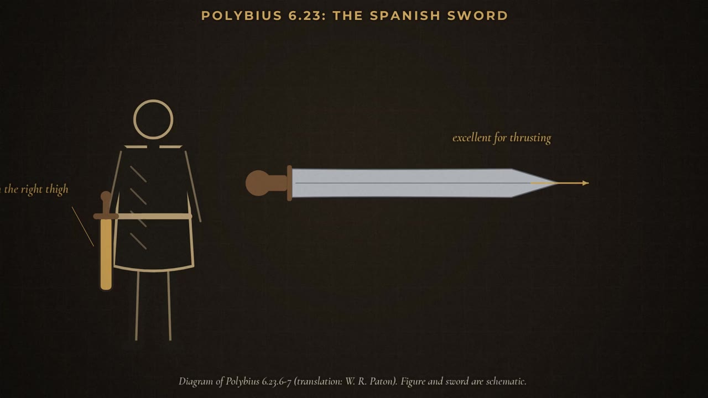
Did you know? In Latin, gladius simply means a sword, and a gladiator is literally a swordsman (Lewis and Short).
The origin story
So why Spanish? A Byzantine encyclopedia of the 10th century, the Suda, keeps a passage that scholars generally take to be from Polybius. It says the swords of the Celtiberians of Spain are unlike anyone else's: they have an effective point, and a powerful downward cut with both edges. So the Romans, in the usual translation, gave up their own swords after the war with Hannibal, and took the Iberian kind. They copied the shape, it says. But they could not match the quality of the iron.
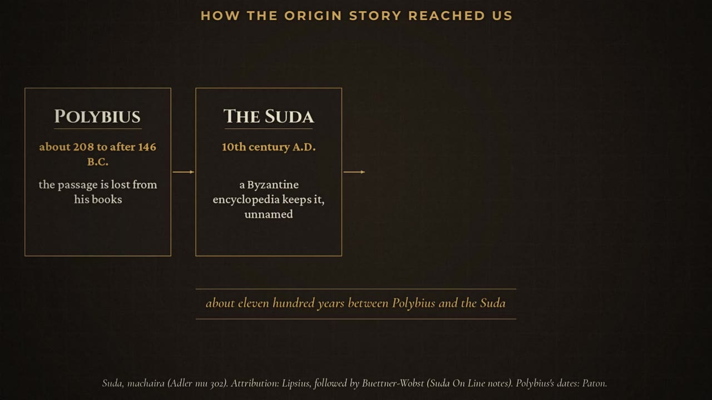
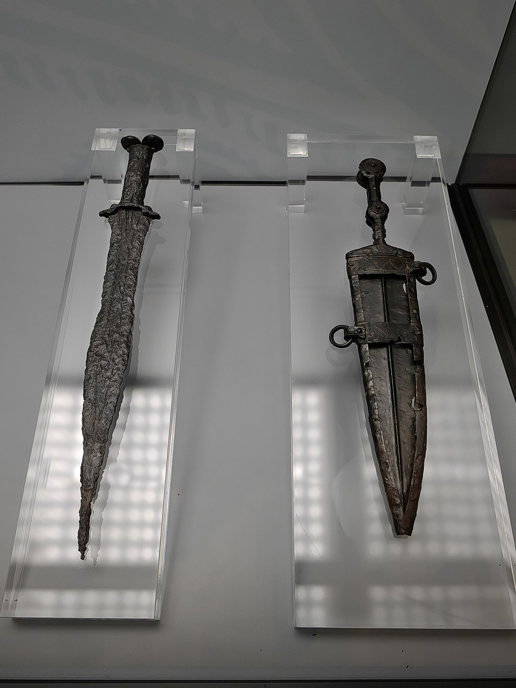
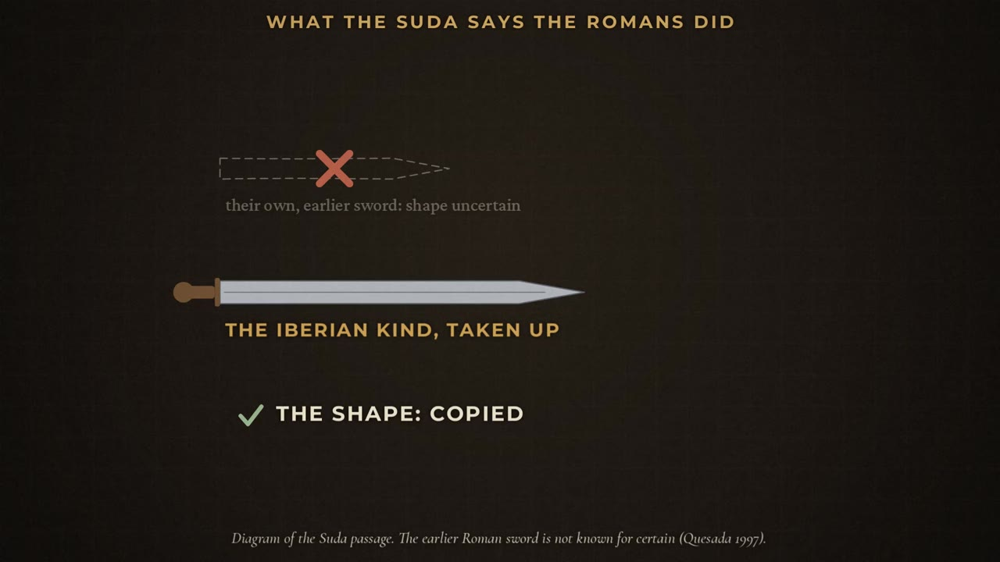
That's the origin story. Now look closer. The Greek gives no year. It only says, from the time of Hannibal. And Livy has a Roman hero, Manlius, fighting a Gaul with a Spanish sword in 361 B.C. More than a century before Hannibal. The Spanish archaeologist Fernando Quesada calls the Spanish sword in that story obviously anachronistic. Later writers, he says, used the words Spanish sword for any good, short, straight sword. His own view: the Romans took the sword during the Second Punic War, perhaps between Cannae in 216 and the fall of Cartagena in 209 B.C., or just after. The Polybius scholar Walbank thought it could be earlier, picked up from Spanish mercenaries in the First Punic War. The texts cannot settle it.
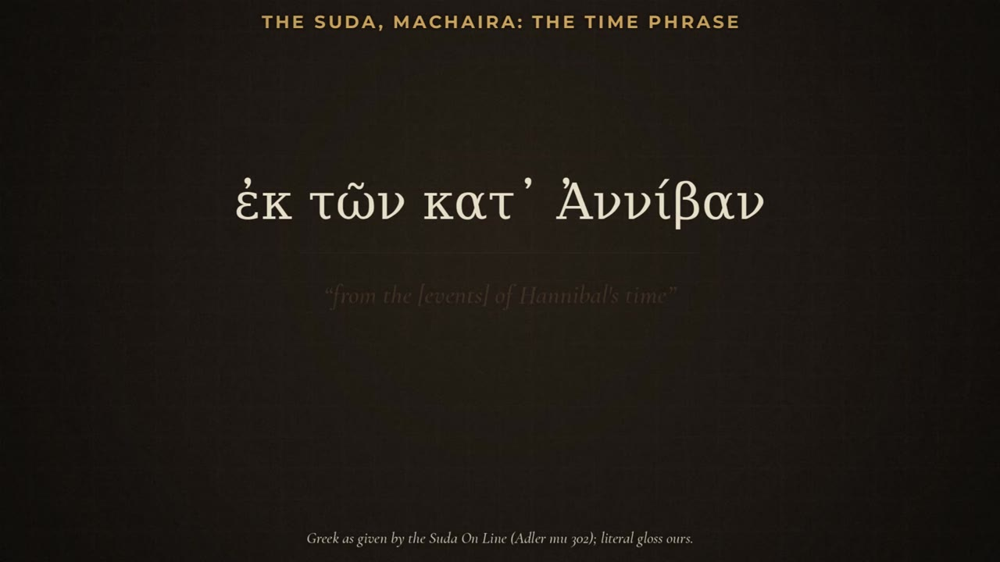
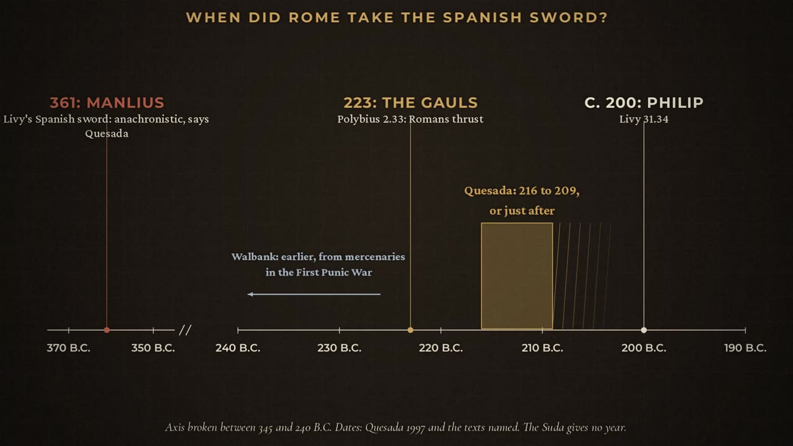
Which Spanish sword? A dispute
And which Spanish sword? You'll often read: the falcata, the curved Iberian blade. Quesada says that is obviously mistaken. The gladius was not a curved sabre. His answer is a straight sword of the Celtiberians, from the central plateau and the southeast of Spain. Its distant ancestor is a Celtic sword of the La Tène culture, changed to local taste from the late fourth century B.C. This Celtiberian sword of the third century B.C., from a cemetery at Gormaz, was bent before it was buried. And the iron had a reputation. The Greek historian Diodorus, writing in the first century B.C., says the Celtiberians buried plates of iron in the ground, and left them until rust had eaten away the weak part. From what was left they forged swords, he says, and no shield, helmet or bone could stand against them. His modern translator calls it a naive explanation. But it shows the reputation.
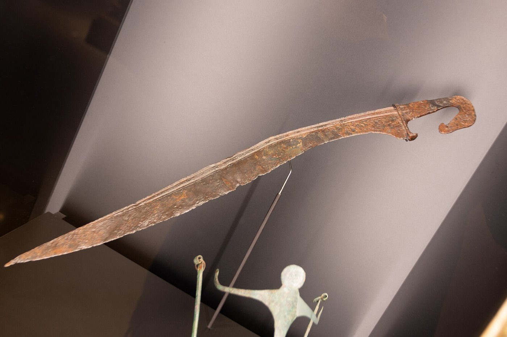
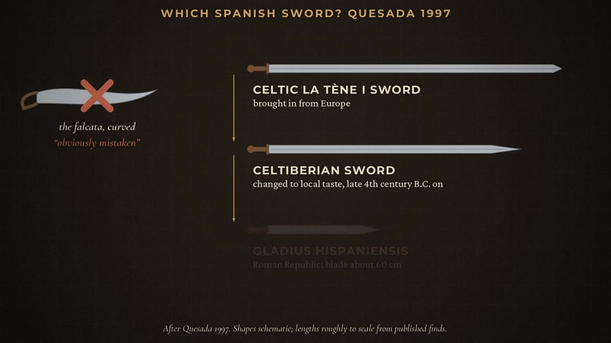
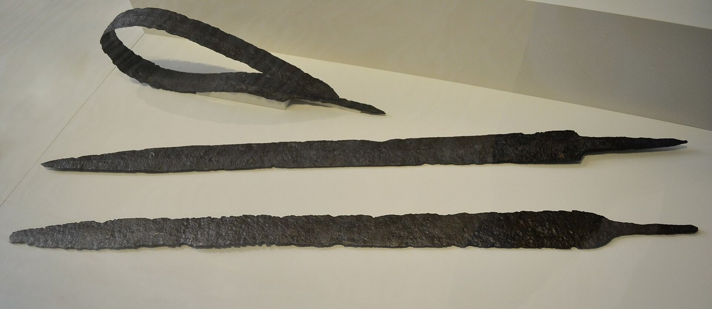
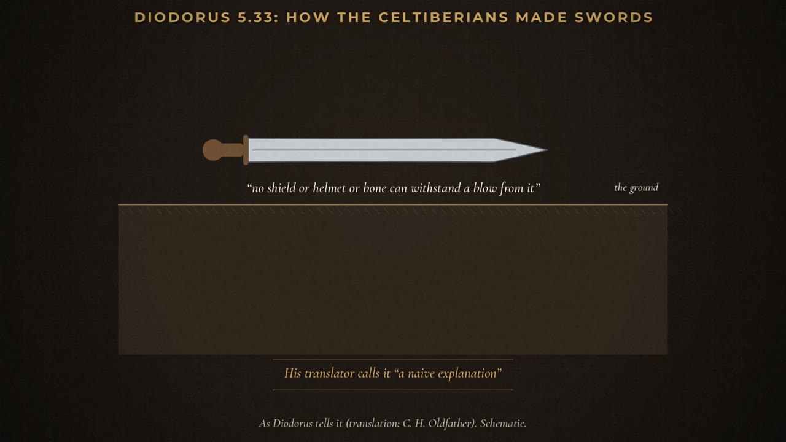
Did you know? Diodorus says the Celtiberians buried plates of iron in the ground until rust had eaten away the weak part, then forged swords from what was left. His modern translator calls it a naive explanation, but it shows the reputation of Spanish iron.
Swords that bent: Polybius on the Gauls
So what made the Roman way of fighting different? Polybius tells a story from a battle against the Gauls of northern Italy, in 223 B.C. He says the Gallic swords bent after the first blow, lengthwise and sideways, and the men had to straighten them with their foot. The Romans did not slash. They thrust, with swords that did not bend, at the chest and the face. Polybius was born some fifteen years after that battle. And notice: if Quesada is right, these Romans did not have the Spanish sword yet. At Cannae, he compares Hannibal's own troops. The Spaniards' swords thrust as well as they cut. The Gallic sword could only slash, from a distance.
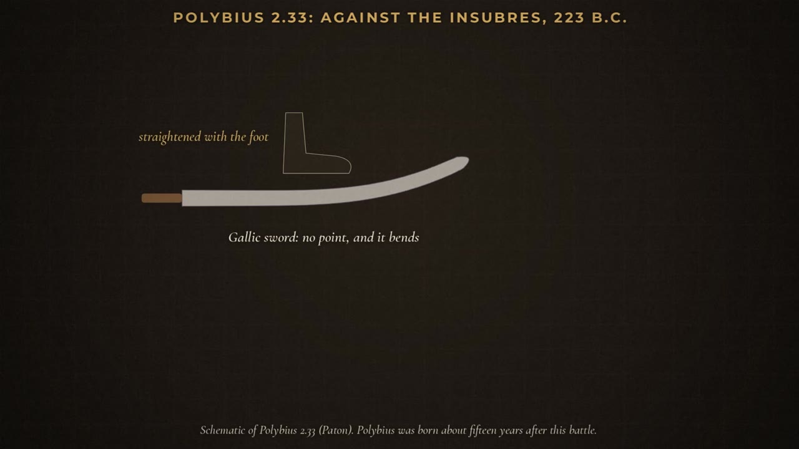
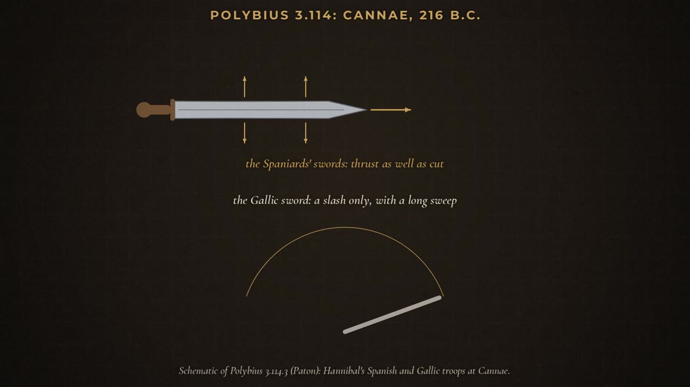
Did you know? Polybius says the Gauls' swords bent after the first blow, lengthwise and sideways, and had to be straightened with the foot, while the Romans thrust with swords that did not bend. Polybius was born about fifteen years after that battle.
The first gladii: long blades
Now the objects. They are the hardest evidence we have. For most of the twentieth century, nobody could say for sure what the sword of the Roman Republic looked like. Quesada says only recent finds made it possible: from the island of Delos, from southern France, and from Alfaro, in northern Spain. A hoard from Grad near Šmihel, in Slovenia, buried probably in the early second century B.C., is one of the earliest finds of weapons reliably known to be Roman. Two of its swords are probably early Roman types. And here's the surprise. The Republican blades from Delos and France are long. Around 60 centimetres, some up to 67. The first gladius was longer than the ones that came after.
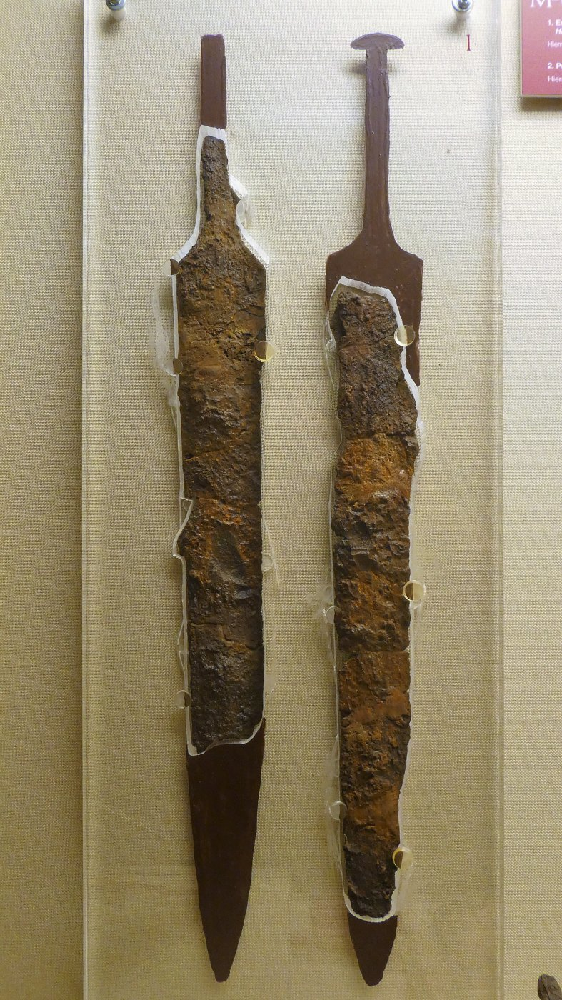
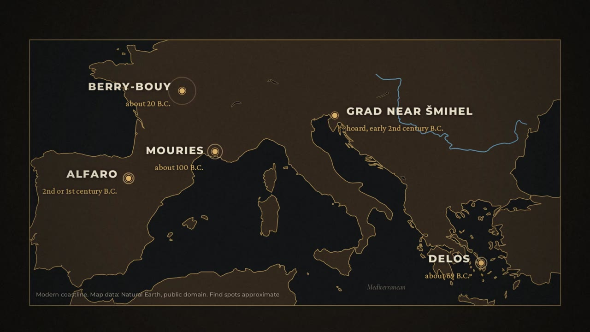
The Mainz type and the Sword of Tiberius
Then, under Augustus, or perhaps a little earlier, it changes. Archaeologists call the new form the Mainz type, because the largest group of them comes from the river Rhine at Mainz. Shorter, with a blade that tapers to a long point. Quesada gives an average blade of about 50 centimetres. On the Fulham sword, found in the river Thames, the tip alone is almost exactly a third of the blade. The most famous one is the so-called Sword of Tiberius, from Mainz, now in the British Museum. On its gilded scabbard, a man in uniform hands a seated ruler, posed like Jupiter, a statuette of Victory. The museum's catalogue says Tiberius and Augustus. Others read it as Germanicus and Tiberius. The museum thinks it was almost certainly made for a senior officer. Whose it was, we do not know.
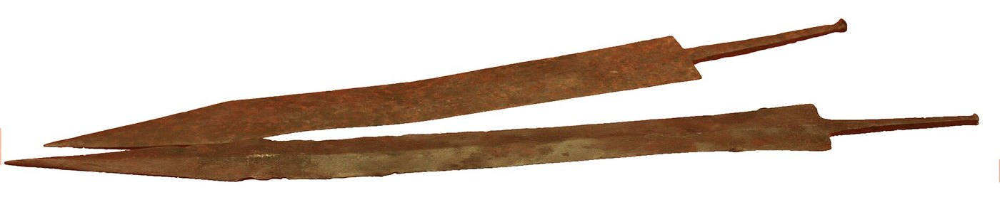
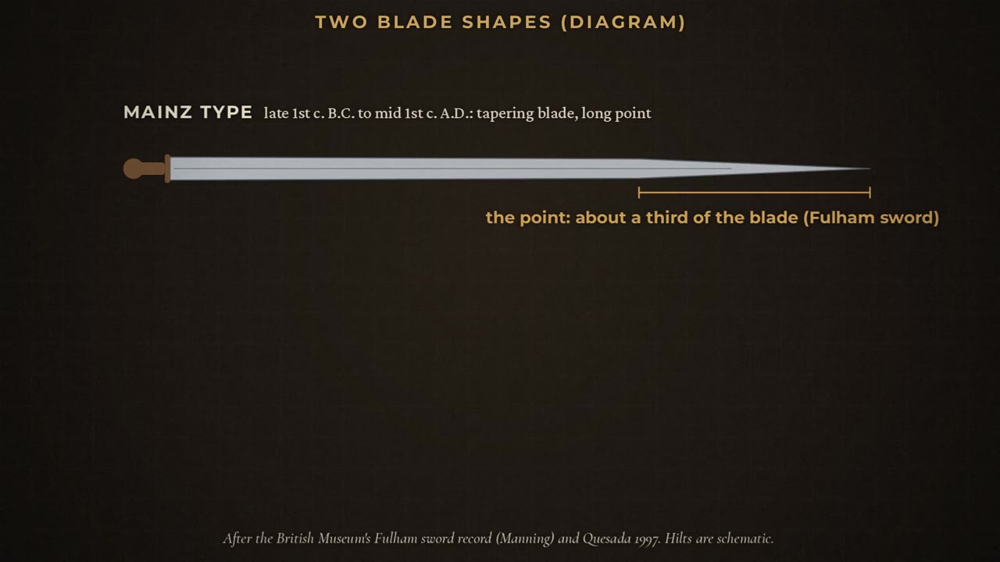
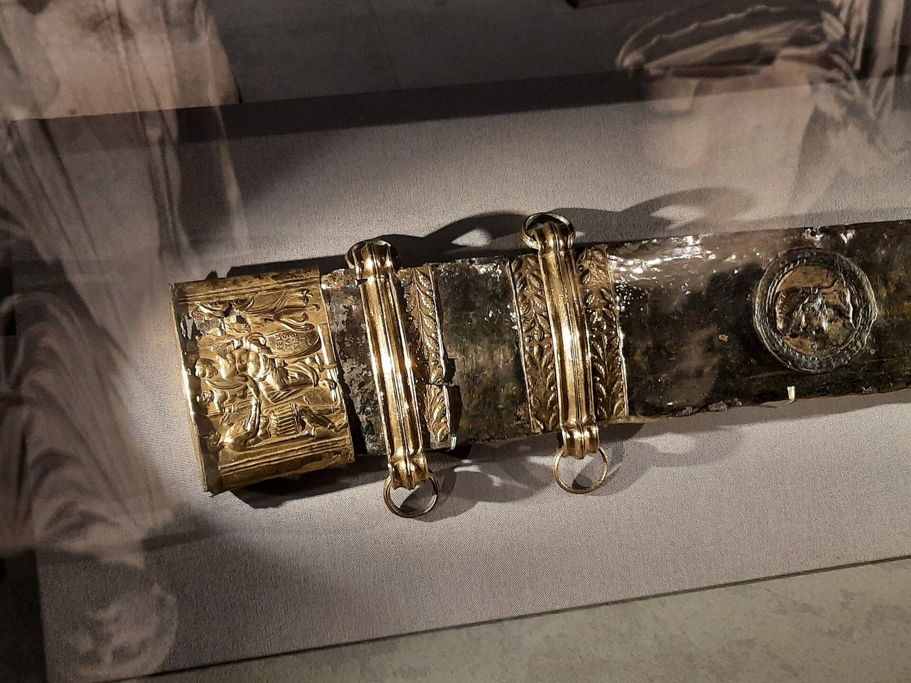
Some scabbards even carry their maker's name. In 1904, a sword was found in grey clay at Strasbourg, still in its scabbard. A stamp on the scabbard says: Quintus Nonienus Pudens made it, at the Altar. The museum thinks the Altar means Lyon. Cologne has also been suggested. And whether the sword was lost in a fight or offered at a spring, the museum cannot say.
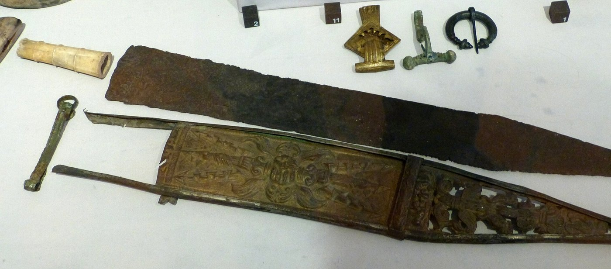
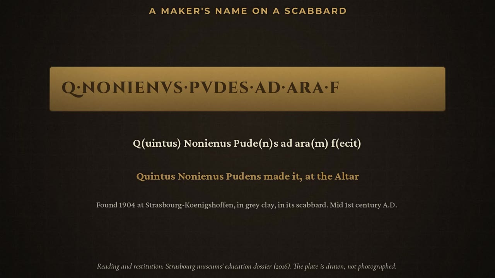
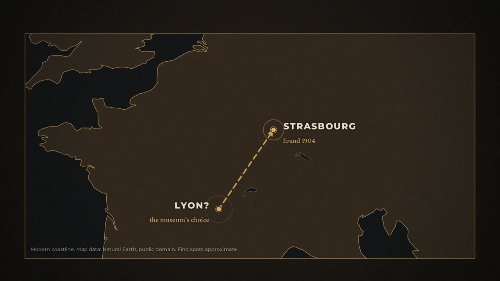
Did you know? A Roman scabbard found at Strasbourg in 1904 carries its maker's name: Quintus Nonienus Pudens made it at the Altar, which the museum thinks means Lyon.
The Pompeii type
Around the middle of the first century A.D., a new form gradually takes over. The archaeologist Günter Ulbert named it the Pompeii type, after swords found at Pompeii. Its edges run parallel, and turn in only 5 to 10 centimetres from the tip. Quesada gives blades of about 42 to 50 centimetres. This one, in the museum at Naples, comes from the gladiators' barracks at Pompeii. Side by side, the later swords are clearly shorter than the first. Whether the Pompeii type was shorter than the Mainz type, the sources disagree. Quesada says yes. The British Museum says much the same length.
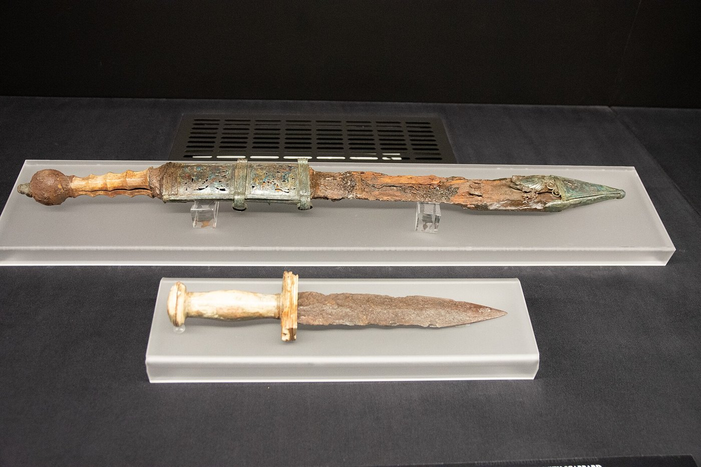
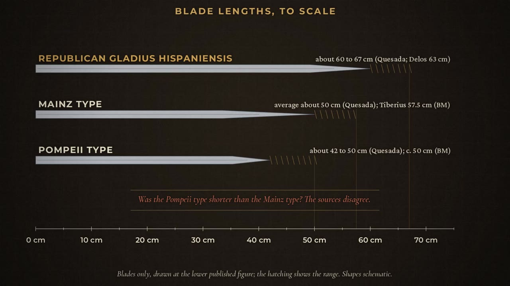
Stabbing only? What the texts say
So was it a stabbing sword? That's the popular picture. Polybius, as we heard, says both. Elsewhere he says the Roman soldier cuts and thrusts, so he needs room. The British Museum describes the Mainz type as made mainly for stabbing. The shape points that way. The clearest rule comes from Vegetius, who wrote at the end of the fourth century A.D. or later, long after this sword had gone. He says recruits learned to strike with the point, not the edge, because a thrust two Roman inches deep is fatal. That's about 5 centimetres. And Tacitus, on the battle at Mons Graupius in Britain, has auxiliary soldiers striking with their shield bosses and stabbing at faces, while the Britons' long swords, without points, are no use in the crush. So: a sword that could do both, with the point in first place. Stabbing only is not what the sources say.
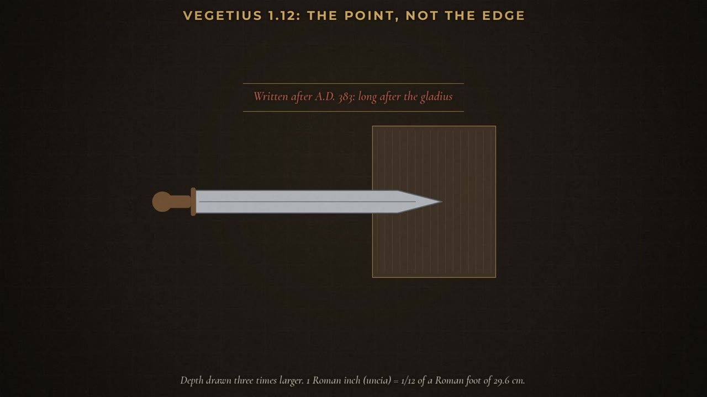
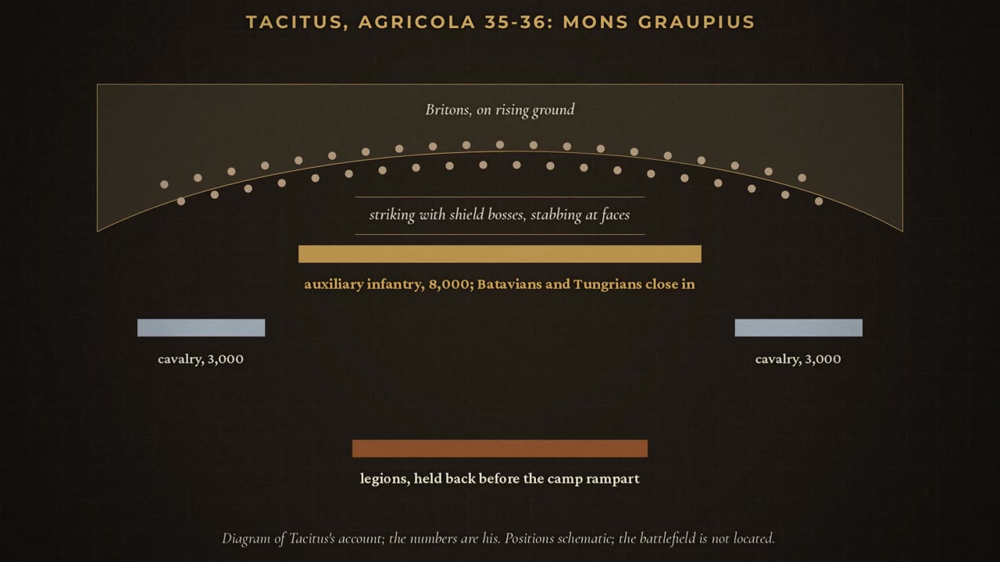
Right side or left?
One more puzzle. On which side did it hang? Polybius says the right thigh. The archaeologist M.C. Bishop says the sword was worn on the right until about the middle of the second century A.D. But Josephus, describing the Roman army of his day, says the soldiers carry a sword on each side. The longer one on the left. The one on the right no longer than a hand span. If his short one is the dagger, he puts the sword on the wrong side. Did he mix them up, or see something we can't? We do not know.
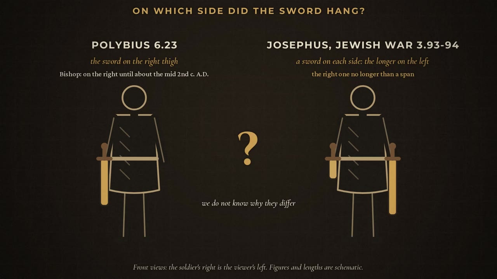
The end of the gladius
And then the gladius disappears. Around the middle of the second century A.D., Bishop says, all troops switch to a longer sword, the spatha, now worn on the left. Why? Bishop says no Roman writer tells us.
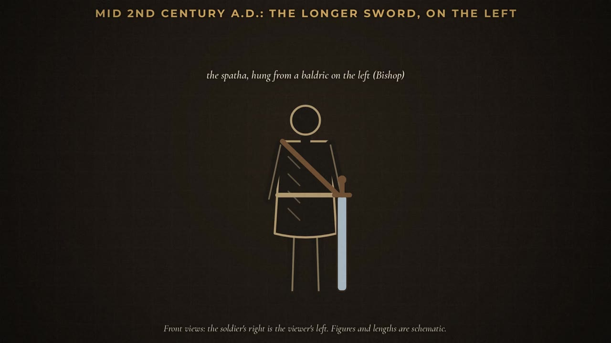
What we really have
So, what do we really have? Real swords, from Slovenia, Spain, France, the Rhine, the Thames and Pompeii. Three shapes, one after another, and the first was the longest. And an origin story in one passage, which most scholars accept, with a date nobody can pin down. What we don't have: the moment the Romans took it up, or the reason they gave it up.
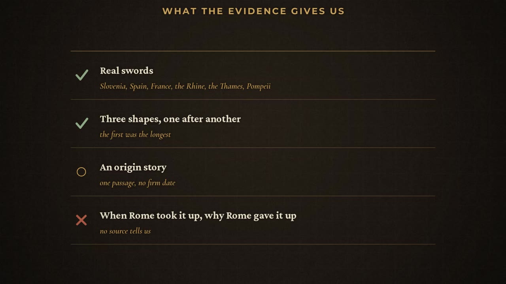
Verdict, and what comes next
So that's the gladius. Not one sword, but a family. And the first of them was the longest.
Questions for you: Livy's Spanish sword that horrified Philip's men: the legionary's sword, or a cavalry sword? Polybius puts the sword on the right, Josephus on the left. Who do you believe? After the segmented armour, what next: the Roman helmets, or the lead sling bullets?
Over to you
Livy's Spanish sword that horrified Philip's men: the legionary's sword, or a cavalry sword? Polybius puts the sword on the right, Josephus on the left. Who do you believe? After the segmented armour, what next: the Roman helmets, or the lead sling bullets?
Prefer to watch? The video on YouTube covers the same story with the full animations. Jump to a part:
- 0:00 Philip's dead cavalrymen, about 200 B.C.
- 1:01 What does gladius mean?
- 1:39 The origin story
- 3:04 Which Spanish sword? A dispute
- 4:06 Swords that bent: Polybius on the Gauls
- 4:57 The first gladii: long blades
- 5:44 The Mainz type and the Sword of Tiberius
- 7:08 The Pompeii type
- 7:49 Stabbing only? What the texts say
- 8:48 Right side or left?
- 9:23 The end of the gladius
- 9:40 What we really have
- 10:03 Verdict, and what comes next
Quick answers
What does gladius mean?
In Latin, gladius simply means a sword, any sword, and a gladiator is literally a swordsman. Historians use the word for the sword of the Roman foot soldier.
Where did the Roman gladius come from?
A passage in the Byzantine Suda, generally taken to be from Polybius, says the Romans took the Iberian sword after the war with Hannibal, in the usual translation; the Greek gives no year. The archaeologist Fernando Quesada thinks the model was a straight Celtiberian sword descended from Celtic La Tene swords, not the curved falcata, and dates the change to the Second Punic War or just after. Others thought it earlier. The texts cannot settle it.
How long was a Roman gladius?
The first gladii of the Republic had long blades, around 60 centimetres and some up to 67. The later Mainz type averaged about 50 centimetres, and Quesada gives about 42 to 50 for the Pompeii type, though the British Museum gives much the same length for both.
Was the gladius only a stabbing sword?
No. Polybius says it was excellent for thrusting and that both edges cut, and that the Roman soldier cut and thrust. The British Museum describes the Mainz type as made mainly for stabbing, and the late writer Vegetius says recruits learned to strike with the point.
On which side did Roman soldiers wear the gladius?
Polybius says on the right thigh, and the archaeologist M.C. Bishop says the sword was worn on the right until about the middle of the second century A.D. Josephus says the longer sword hung on the left. We do not know why the two differ.
Where it happened
- Mainz, Germany (A.D. 1): Findspot of the Sword of Tiberius; the Mainz type is named after the large group of swords from the Rhine here.
- Pompeii, Italy (A.D. 70): The Pompeii type is named after swords found here; a gladius from the gladiators' barracks is in the Naples museum.
- Strasbourg-Koenigshoffen, France (A.D. 50): A gladius found in 1904 in its scabbard, with the maker's name Quintus Nonienus Pudens.
- Delos, Greece (69 B.C.): A Republican gladius of about 69 B.C., blade about 63 cm (Quesada 1997).
- Alfaro (La Azucarera), Spain (100 B.C.): Republican swords with blades of about 55 to 60 cm (Quesada 1997).
- Grad near Smihel, Slovenia (180 B.C.): A hoard of Roman Republican weapons, buried probably in the first half of the 2nd century B.C.
- Fulham, London (A.D. 20): The Fulham sword, found in the Thames, now in the British Museum.
Sources
Ancient writers and modern work
All sources below were read on 2026-11-14. Verbatim excerpts are kept in `research/ancient-texts.md` and `research/scholarship-museums.md`.
Translations are credited where a translation is quoted on screen. Anything not read in full is marked.
Ancient texts
https://penelope.uchicago.edu/Thayer/E/Roman/Texts/Polybius/6*.html.
"Besides the shield they also carry a sword, hanging on the right thigh and called a Spanish sword. This is excellent for thrusting, and both of its
edges cut effectually, as the blade is very strong and firm." The Greek word is Iberike, "Iberian".
Supports: the sword on the right thigh, its name, cut and thrust.
them "with the foot"; the swords have no points; the Romans "instead of slashing continued to thrust with their swords which did not bend", "on the
breast or face". Also used: **2.30.8** (Telamon). Paton's "and not for a thrust" fills a gap in the Greek, so we do not quote 2.30.8 on screen.
allowed to stay in Rome in 167; stood by Scipio at Carthage in 146 B.C.
The Celtiberians' swords have an effective point and a powerful downward cut; the Romans gave up their ancestral swords "after the [war] against
Hannibal" and took the Iberian kind; they copied the construction but not the quality of the iron. The Greek time phrase is ek ton kat' Annibana
("from the [events] of Hannibal's time"): the word "war" is supplied by translators. The entry does not name Polybius: Lipsius (1547 to 1606)
attributed it to him and Buettner-Wobst prints it as fragment 179 (SOL notes). "From both hands" in the SOL translation follows the manuscript;
Buettner-Wobst's correction gives "both edges", which matches Polybius 6.23. The Suda as a "10th century Byzantine Greek historical encyclopedia":
Suda On Line home page.
(Loeb, 1935). Philip V has his cavalry dead brought into camp so that all can see the honour of the funeral; his men, used to wounds from javelins,
arrows and lances, see bodies cut by the "gladius Hispaniensis", arms cut off with the shoulder, heads severed, and are afraid. Sage's footnote:
"The long and heavy sabre, adapted to slashing blows, carried by Roman cavalry". The dead were cavalry (31.33). This is a named dispute in the video.
fights a Gaul with a "Hispanus" / "Hispanicus" sword. Livy dates the duel to 361 B.C.
https://penelope.uchicago.edu/Thayer/E/Roman/Texts/Diodorus_Siculus/5B*.html. The Celtiberians bury plates of iron until rust has eaten what is weak;
they make swords of what is left; "no shield or helmet or bone can withstand a blow from it". Oldfather's footnote: "A naive explanation".
Diodorus's dates: Oldfather's introduction on LacusCurtius (at work by 56 B.C.; published between 36 and 30 B.C.).
35: 8,000 auxiliary infantry in the centre, 3,000 cavalry on the wings, the legions stood before the rampart. 36: four Batavian and two Tungrian
cohorts close in; "ferire umbonibus, ora fodere" (strike with the shield bosses, stab at faces); the Britons' swords without points cannot cope with
close fighting. The Church and Brodribb translation says "three" Batavian cohorts; the Latin says four (quattuor). We give no cohort numbers on screen.
puncta duas uncias adacta mortalis est". Date: E. L. Wheeler, Bryn Mawr Classical Review 2008.06.42 (review of M. B. Charles, Vegetius in Context),
read: "A reference (1.20.3) to Gratian as divus dates the text after 383"; "Theodosius I (379-395) and Valentinian III (425-455) have become the
scholarly favorites". The video says "at the end of the fourth century A.D. or later" and, on screen, "written after A.D. 383".
longer, the right one no longer than a span. Reading the short one as a dagger is our inference and is said as "if".
Modern scholarship
Full text read (Internet Archive copy of the author's university PDF). Supports: the falcata "obviously mistaken because the Roman gladius was not a
curved sabre"; the prototype "a Celtiberian sword whose remote origin is ... in the Celtic La Tene I sword substantially modified in accordance with
local tastes from the late 4th century BC in the Meseta and the Southeast"; adoption "during the Second Punic War, perhaps between 216 (Cannae) and
209 (the fall of Cartagena), or perhaps just after the war"; the Manlius duel "obviously anachronistic"; "hispaniensis" later a byword for any short,
robust, straight double-edged sword; Walbank's alternative (Spanish mercenaries in the First Punic War); the caution "we may be trying to extract too
much from the brief descriptions in Polybius"; the Suda text "generally accepted" as Polybian; Republican finds at Delos (blade 63.1 cm), in France
(blades 60 to 67 cm) and at La Azucarera, Alfaro (55 to 60 cm); Republican blades "about 60 cm"; the Mainz type (late 1st c. B.C. to mid 1st c.
A.D., average blade 50.0 cm after Feugere); the Pompeii type (from the mid 1st c. A.D., blades 42 to 50 cm after Bishop and Coulston).
Also the opening sentence: the identification "has been the subject of debate throughout this century ... Only now, in the light of recent
discoveries and research, is it possible".
about 1890, burial probably in the first half of the 2nd century B.C.; two swords "probably early representatives of Roman gladius types".
**Kmetic, Horvat and Vodopivec, Arheoloski vestnik 55 (2004)**: "one of the earliest closed finds of weapons reliably known to be Roman".
A later revision of the dating was seen only as a search snippet (Laharnar) and NOT read.
The gladius hispaniensis was longer than its successors (Delos blade 640 mm); Mainz and Pompeii blades mostly 450 to 520 mm; around the middle of
the 2nd century A.D. a switch "to the longer sword for all troops", with the side changing "from right to left" and a new baldric; "No Roman writer
saw fit to refer to" the reason; two spathae from Canterbury, 655 and 695 mm. Bishop's book The Gladius (Osprey 2016) was NOT read.
found in the Thames at Fulham; the tip, some 18 cm, almost exactly one third of the blade; the Mainz type "intended primarily as a stabbing weapon",
named by Ulbert after the largest group from the Rhine at Mainz; the Pompeii type replaced it "sometime before or around the middle of the first
century", blade "of similar length (c. 50 cm)", edges converging 5 to 10 cm from the tip, named by Ulbert "after examples found there (Ulbert 1969)".
is shown semi-nude, and sits in the pose of Jupiter ... while Tiberius, in military dress, presents Augustus with a statuette of Victory"; "almost
certainly commissioned for a senior officer"; blade 57.5 cm. The record's date line ("15 (circa)") does not say B.C. or A.D., so the video gives no
date for this sword.
The number of Pompeii swords is therefore not given.
https://www.musees.strasbourg.eu/documents/30424/572657/0/4a094a20-1eaa-f936-a289-7dfa206e9e22. Found August 1904 at the entrance of the vicus of
Koenigshoffen, in grey clay 2 m deep, still in its scabbard; mid 1st century A.D.; perhaps lost in a fight or an offering near a spring; scabbard plate
with the hand of Jupiter and three thunderbolts; maker's name "Q.NONIENUS.PUDES.AD.ARA.F", restored "Q(uintus) Nonienus Pudes ad ara(m) F(ecit)";
the workshop "ad aram" is hard to place, Cologne (Ara Ubiorum) and Lyon have been proposed, two other stamps (Vindonissa, Great St Bernard) favour
Lyon. The museum's dimensions (53.5 by 7 cm) come from the Commons file description and are not used in the narration.
Celtiberian, La Tene type (Quesada VII), 3rd century B.C., bent before it was buried, 72 cm.
Museum objects shown (dates and places from the museum label or record as given on Wikimedia Commons; licences in `image-manifest.json`)
Sword of Tiberius (British Museum, several photographs); Pompeii gladius and short sword (Museo Archeologico Nazionale, Naples: label "Pompeii,
gladiators' barracks, 1st century A.D."); gladius hispaniensis (Museo de la Romanizacion, Calahorra: label "3rd to 1st century B.C."); Celtiberian
sword and dagger from Carratiermes, 3rd to 2nd century B.C. (Museo Numantino, Soria); La Tene-type swords (MAN Madrid); Iberian falcata, 325 to 300
B.C. (Museu de Lleida); Roman sword, first half of the 1st century A.D., excavated 2011 at Rennes (Musee de Bretagne); Mainz-type blades and a Pompeii-type
scabbard mouth plate (Museum Carnuntum); the Strasbourg gladius (Musee archeologique, Strasbourg); a Mainz-type sword from a wreck off
Saintes-Maries-de-la-Mer (Musee de l'Arles antique); Trajan's Column battle scenes (plaster casts).
Added by the independent fact-check (2026-11-14)
into Macedonia usually place it in 199 B.C. (e.g. the campaign summaries found by search; Galba crossed to Illyria late in 200). The video now says
"about 200 B.C.".
on Commons (which the video uses) carry a description "AD 14-18 ... Germanicus ... hands the enthroned Tiberius a figure of victory", and the older
reading (seated Tiberius, standing Germanicus) is reported in secondary literature. Disputed; both readings are given.
scabbard plate ("la partie supérieure de la plaque porte le nom du fabricant"): it names the scabbard's maker, not necessarily the blade's.
gladius prototype (blades mostly 32 to 40 cm); the caption now says so.
Image credits
- Sword of Tiberius, from Mainz. British Museum 1866,0806.1. Photo: Jamie Heath, CC BY-SA 2.0
- Sword of Tiberius and scabbard, from Mainz. British Museum. Photo: Caeciliusinhorto, CC BY-SA 4.0
- Gladius with scabbard (top) and a short sword, from the gladiators' barracks at Pompeii. Museo Archeologico Nazionale, Naples. Photo: Dorieo, CC BY-SA 4.0
- Sword of Tiberius, blade and scabbard. British Museum. Photo: Jamie Heath, CC BY-SA 2.0
- Sword of Tiberius, scabbard. British Museum. Photo: Jamie Heath, CC BY-SA 2.0
- Sword of Tiberius, blade and scabbard. British Museum. Photo: Jamie Heath, CC BY-SA 2.0
- Celtiberian sword and dagger from Carratiermes, 3rd to 2nd century B.C. Museo Numantino, Soria. Photo: Jl FilpoC, CC BY-SA 4.0
- Iberian falcata, 325 to 300 B.C. Museu de Lleida. Photo: Dorieo, CC BY-SA 4.0
- Swords of La Tene type from Spain; top: Gormaz, 3rd century B.C., bent before burial. Museo Arqueologico Nacional, Madrid. Photo: Dorieo, CC BY-SA 4.0
- Roman sword, first half of the 1st century A.D., excavated 2011 at Rennes. Musee de Bretagne. Photo: Alain Amet, Musee de Bretagne, CC BY-SA 4.0
- Gladius hispaniensis, 3rd to 1st century B.C. (museum label). Museo de la Romanizacion, Calahorra. Photo: Artistosteles, CC BY-SA 4.0
- Blades of Mainz-type gladii (Fulham and Sisak variants). Museum Carnuntum. Photo: Matthias Kabel, CC BY 2.5
- Sword of Tiberius, scabbard, detail. British Museum. Photo: Jamie Heath, CC BY-SA 2.0
- Sword of Tiberius and scabbard, from Mainz. British Museum. Photo: Jononmac46, CC BY-SA 4.0
- Gladius and scabbard, 1st century A.D., Strasbourg-Koenigshoffen. Musee archeologique, Strasbourg. Photo: Wolfgang Sauber, CC BY-SA 4.0
- The Strasbourg gladius and scabbard (hand of Jupiter), shown at Lyon in 2019. Photo: Lyokoi, CC BY-SA 4.0
- Mouth plate of a Pompeii-type gladius scabbard. Museum Carnuntum. Photo: Matthias Kabel, CC BY 2.5
- Trajan's Column, battle scene, early 2nd century A.D. (plaster cast, Bucharest). Photo: Joe Mabel, CC BY-SA 3.0
- Mainz-type sword and scabbard, 1st century A.D., from a wreck off Saintes-Maries-de-la-Mer. Musee de l'Arles antique. Photo: Ad Meskens, CC BY-SA 3.0
- Trajan's Column, battle scene, early 2nd century A.D. (plaster cast). Photo: Joe Mabel, CC BY-SA 3.0
- Animations, maps and diagrams: original work, Spoken History. Map data: Natural Earth, public domain.
- Music: Kimiko Ishizaka - Bach - Well-Tempered Clavier, Book 1 - 31 Prelude No. 16 in G minor, BWV 861: Composed by Johann Sebastian Bach, performed by Kimiko Ishizaka; CC0 on the Commons file page
- Music: Brendan Kinsella - Mozart - Sonata No 13 In B Flat Major K333 - II Andante Cantabile: Wolfgang Amadeus Mozart; CC0 on the Commons file page
- Music: Mozart - String Quartet No. 15 in D minor, K421 - II. Andante (Musopen String Quartet): Wolfgang Amadeus Mozart; released to the public domain by Musopen (PD-author on the Commons file page)
- Music: Beethoven - String Quartet No. 6 in B flat major, Op. 18 No. 6 - IV. La malinconia (Musopen String Quartet): Ludwig van Beethoven; released to the public domain by Musopen (PD-author on the Commons file page)
- Music: Gymnopedie No. 1.: Teknopazzo; CC0 on the Commons file page
Transcript
Read the full narration
What Was the Gladius, Really?. Rome's sword, and where it came from. Macedonia, about 200 B.C. King Philip V has his dead cavalrymen carried back into camp. He wants every man to see how they are honoured in death, says the Roman historian Livy. It does the opposite. His soldiers know the wounds of javelins and arrows. Now they see arms cut off at the shoulder, and heads cut clean from the body. And a shudder of fear runs through the camp. Livy names the weapon. The Spanish sword. The gladius. The sword of the Roman legions. Last time I asked what we should take apart next. This is it. The Roman weapon everyone thinks they know. Today we're asking what it was, what has been dug up, and what the texts really say. Because even that story from Livy is not as simple as it sounds. First, the name. In Latin, gladius simply means a sword. Any sword. And a gladiator is, literally, a swordsman. What historians call the gladius is the sword of the Roman foot soldier. The best description comes from a Greek, Polybius, who lived in Rome from about 167 B.C. He says the heavy-armed Roman foot soldier carries a sword on the right thigh, and that it is called the Spanish sword. In Paton's translation: it is excellent for thrusting, and both its edges cut, because the blade is very strong and firm. So why Spanish? A Byzantine encyclopedia of the 10th century, the Suda, keeps a passage that scholars generally take to be from Polybius. It says the swords of the Celtiberians of Spain are unlike anyone else's: they have an effective point, and a powerful downward cut with both edges. So the Romans, in the usual translation, gave up their own swords after the war with Hannibal, and took the Iberian kind. They copied the shape, it says. But they could not match the quality of the iron. That's the origin story. Now look closer. The Greek gives no year. It only says, from the time of Hannibal. And Livy has a Roman hero, Manlius, fighting a Gaul with a Spanish sword in 361 B.C. More than a century before Hannibal. The Spanish archaeologist Fernando Quesada calls the Spanish sword in that story obviously anachronistic. Later writers, he says, used the words Spanish sword for any good, short, straight sword. His own view: the Romans took the sword during the Second Punic War, perhaps between Cannae in 216 and the fall of Cartagena in 209 B.C., or just after. The Polybius scholar Walbank thought it could be earlier, picked up from Spanish mercenaries in the First Punic War. The texts cannot settle it. And which Spanish sword? You'll often read: the falcata, the curved Iberian blade. Quesada says that is obviously mistaken. The gladius was not a curved sabre. His answer is a straight sword of the Celtiberians, from the central plateau and the southeast of Spain. Its distant ancestor is a Celtic sword of the La Tène culture, changed to local taste from the late fourth century B.C. This Celtiberian sword of the third century B.C., from a cemetery at Gormaz, was bent before it was buried. And the iron had a reputation. The Greek historian Diodorus, writing in the first century B.C., says the Celtiberians buried plates of iron in the ground, and left them until rust had eaten away the weak part. From what was left they forged swords, he says, and no shield, helmet or bone could stand against them. His modern translator calls it a naive explanation. But it shows the reputation. So what made the Roman way of fighting different? Polybius tells a story from a battle against the Gauls of northern Italy, in 223 B.C. He says the Gallic swords bent after the first blow, lengthwise and sideways, and the men had to straighten them with their foot. The Romans did not slash. They thrust, with swords that did not bend, at the chest and the face. Polybius was born some fifteen years after that battle. And notice: if Quesada is right, these Romans did not have the Spanish sword yet. At Cannae, he compares Hannibal's own troops. The Spaniards' swords thrust as well as they cut. The Gallic sword could only slash, from a distance. If you are enjoying this type of content, please don't forget to subscribe. Now the objects. They are the hardest evidence we have. For most of the twentieth century, nobody could say for sure what the sword of the Roman Republic looked like. Quesada says only recent finds made it possible: from the island of Delos, from southern France, and from Alfaro, in northern Spain. A hoard from Grad near Šmihel, in Slovenia, buried probably in the early second century B.C., is one of the earliest finds of weapons reliably known to be Roman. Two of its swords are probably early Roman types. And here's the surprise. The Republican blades from Delos and France are long. Around 60 centimetres, some up to 67. The first gladius was longer than the ones that came after. Then, under Augustus, or perhaps a little earlier, it changes. Archaeologists call the new form the Mainz type, because the largest group of them comes from the river Rhine at Mainz. Shorter, with a blade that tapers to a long point. Quesada gives an average blade of about 50 centimetres. On the Fulham sword, found in the river Thames, the tip alone is almost exactly a third of the blade. The most famous one is the so-called Sword of Tiberius, from Mainz, now in the British Museum. On its gilded scabbard, a man in uniform hands a seated ruler, posed like Jupiter, a statuette of Victory. The museum's catalogue says Tiberius and Augustus. Others read it as Germanicus and Tiberius. The museum thinks it was almost certainly made for a senior officer. Whose it was, we do not know. Some scabbards even carry their maker's name. In 1904, a sword was found in grey clay at Strasbourg, still in its scabbard. A stamp on the scabbard says: Quintus Nonienus Pudens made it, at the Altar. The museum thinks the Altar means Lyon. Cologne has also been suggested. And whether the sword was lost in a fight or offered at a spring, the museum cannot say. Around the middle of the first century A.D., a new form gradually takes over. The archaeologist Günter Ulbert named it the Pompeii type, after swords found at Pompeii. Its edges run parallel, and turn in only 5 to 10 centimetres from the tip. Quesada gives blades of about 42 to 50 centimetres. This one, in the museum at Naples, comes from the gladiators' barracks at Pompeii. Side by side, the later swords are clearly shorter than the first. Whether the Pompeii type was shorter than the Mainz type, the sources disagree. Quesada says yes. The British Museum says much the same length. So was it a stabbing sword? That's the popular picture. Polybius, as we heard, says both. Elsewhere he says the Roman soldier cuts and thrusts, so he needs room. The British Museum describes the Mainz type as made mainly for stabbing. The shape points that way. The clearest rule comes from Vegetius, who wrote at the end of the fourth century A.D. or later, long after this sword had gone. He says recruits learned to strike with the point, not the edge, because a thrust two Roman inches deep is fatal. That's about 5 centimetres. And Tacitus, on the battle at Mons Graupius in Britain, has auxiliary soldiers striking with their shield bosses and stabbing at faces, while the Britons' long swords, without points, are no use in the crush. So: a sword that could do both, with the point in first place. Stabbing only is not what the sources say. One more puzzle. On which side did it hang? Polybius says the right thigh. The archaeologist M.C. Bishop says the sword was worn on the right until about the middle of the second century A.D. But Josephus, describing the Roman army of his day, says the soldiers carry a sword on each side. The longer one on the left. The one on the right no longer than a hand span. If his short one is the dagger, he puts the sword on the wrong side. Did he mix them up, or see something we can't? We do not know. And then the gladius disappears. Around the middle of the second century A.D., Bishop says, all troops switch to a longer sword, the spatha, now worn on the left. Why? Bishop says no Roman writer tells us. So, what do we really have? Real swords, from Slovenia, Spain, France, the Rhine, the Thames and Pompeii. Three shapes, one after another, and the first was the longest. And an origin story in one passage, which most scholars accept, with a date nobody can pin down. What we don't have: the moment the Romans took it up, or the reason they gave it up. So that's the gladius. Not one sword, but a family. And the first of them was the longest. Three questions for you. The Spanish sword that horrified Philip's men: was it the legionary's sword, or a cavalry sword, as the translator Evan Sage thought? Polybius puts the sword on the right, Josephus on the left. Who do you believe? The segmented armour is next. After that, what should I take apart? The Roman helmets, or the lead sling bullets? Thanks for watching, and I'll see you in the next one. It's on your screen right now. Tap it, and I'll see you there.
All 24 topics
More episodes

What Was a Pugio?
A coin struck by Caesar's killers shows two daggers. The pugio, Rome's short dagger, appears in the stories of Caesar, Scaevinus, Arria and Sertorius, none of them a battle. What museums...
Read the story
What Is a Caltrop?
A few centimetres of iron with four spikes, so shaped that one point always stands up. What the Romans called it, the story of buried caltrops at Gaugamela that only Curtius tells, Vegetius...
Read the story
The Roman Onager: Rome's One-Armed Stone-Thrower
A one-armed Roman stone-thrower, named after a wild ass, shook Persian siege towers apart at Amida in A.D. 359. How it worked, how it was crewed and carried, what it really did, and what...
Read the story
The Roman Scorpion: Rome's Sniper Weapon
A Gaulish warrior on a burning wall is hit by a bolt from a machine he never saw. The Roman scorpion was a torsion bolt-shooter powered by twisted sinew and hair. How it worked, who built...
Read the story